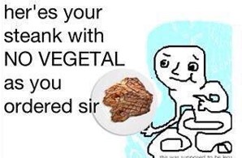
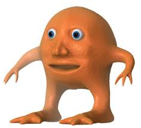
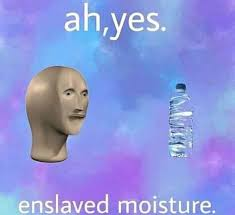
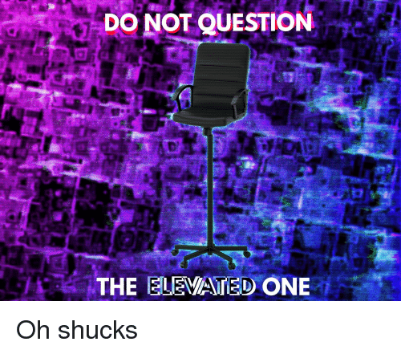

Meme Man is known mainly for his appearance in the meme stonks, a deliberate mispelling of stocks. It is used to describe some sort of financial exchange or trade. This originated with an attempt at animating a 3D human head that obviously resulted quite poorly. The poorly animated head, dubbed "Meme Man" colloqially, has been used in several other memes largely centred around deliberately mispelled words or broken english. Famous examples including "I taste a vegetal" and "I have acheived komdy", or more recently "panik, kalm, panikk"
Meme Man with his friend and or rival, depending on who you ask, Mr Orange
Meme Man's Characteristics
- He can't speak very well
- He hates "vegetals"
- He likes to abuse children
Meme man doesn't have many friends, being quite a violent unique "person", and he's just too
psycopathic cool and good for them anyway. But here's a list of those few he does have
- STEANK MAN 
- MR ORANGE 
- ANYTHING THAT COULD BE CLASSIFIED AS ENSLAVED 
- AND FINALLY, AN OUT OF PROPORTION OFFICE CHAIR 